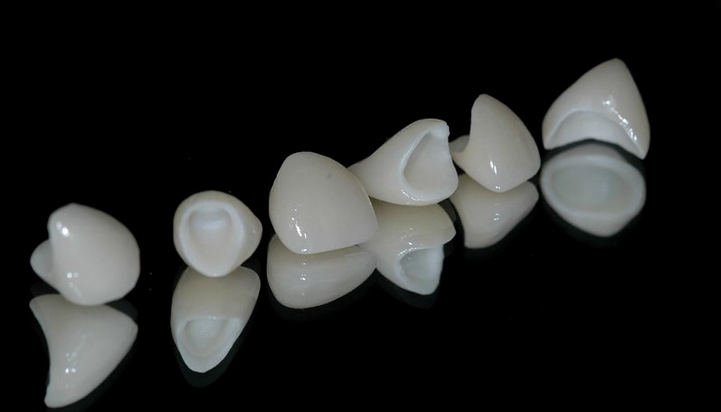

Las coronas de porcelana son la mejor solución para reemplazar la corona natural del diente de forma fija y duradera. Están compuestas por un excelente material que le da una imagen muy parecida a los dientes naturales, lo que permite una bella apariencia a la boca.Suelen ser la parte visible del diente y al igual que un implante dental, su objetivo es sustituir artificialmente la raíz del diente, cuando se presenta el caso de que la corona natural se deteriore por causa de una caries, padezca alguna fractura o en el caso de la pérdida total de la dentadura. En el mercado actual, se ha presentado el zirconio, este ha logrado cambiar totalmente la manera de realizar las coronas de porcelana. Este material, ha aumentado favorablemente la resistencia, se pueden igualar con las coronas de metal – cerámica, pero su forma, color y traslucidez es completamente igual a la de un diente natural.